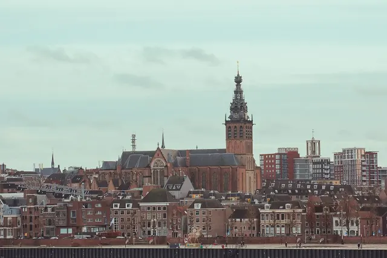

Nationaal Fietsmuseum Velorama
Bijgewerkt op 26 oktober 2026.
Hoe zag een fiets eruit voordat er pedalen op zaten? Aan de Waalkade in Nijmegen zie je het met eigen ogen. Het Nationaal Fietsmuseum Velorama laat de geschiedenis van de fiets zien, van houten loopfietsen en vélocipèdes tot hoge bi's, oorlogsfietsen en de racefiets van Wim van Est. Hier lees je wanneer het museum open is, wat het kost en wat je er ziet.

Openingstijden
Velorama is elke dag open van 12.00 tot 17.00 uur, ook op zon- en feestdagen. Het museum is dicht op eerste en tweede kerstdag, op nieuwjaarsdag en tijdens de Vierdaagse.
Entreeprijzen
- Volwassenen: €11.
- Kinderen tot 18 jaar: €7.
- Studenten, 65-plussers en mensen met een beperking: €8.
- Gezinskaart (2 volwassenen en 2 kinderen): €28.
De Museumkaart is hier niet geldig. Kaartjes koop je aan de balie of online via velorama.nl. Groepen vanaf acht personen kunnen een arrangement afspreken met entree, koffie en appeltaart.
Wat je ziet
Velorama noemt zijn collectie de grootste en belangrijkste fietscollectie ter wereld, met meer dan vijfhonderd historische fietsen. De nadruk ligt op de tijd voor 1900; van daarna zie je vooral bijzondere fietsen en fietsen van bekende mensen. De collectie staat op drie verdiepingen.
- Begane grond: de voorlopers van de fiets, van de houten loopfiets tot de eerste hoge bi's, en drie- en vierwielers.
- Eerste verdieping: hoge bi's, waaronder een met een voorwiel van 60 inch, en de overgang naar de moderne fiets, met fietslampen, bellen en accessoires.
- Tweede verdieping: fietsen met luchtbanden en bijzondere frames, een panorama met oorlogsfietsen, lig- en vouwfietsen, koninklijke rijwielen en een afdeling over het rijwielbelastingplaatje, ooit de meest gehate belasting van Nederland. Er is ook een werkplaats uit de jaren twintig.
Topstukken zijn de beschadigde racefiets waarmee Wim van Est in 1951 in de Tour de France van de Col d'Aubisque viel, een dag nadat hij als eerste Nederlander de gele trui droeg, en de verlovingstandem van prinses Juliana en prins Bernhard uit 1936. Sinds 17 juli 2026 is er de tentoonstelling Wim van Est, 75 jaar na de val, met nieuwe stukken en verhalen van zijn kleinkinderen. Daarnaast vind je het Gazelle-archief en de wielerbibliotheek Dries van Agt.
Op zondag om 14.00 uur is er een rondleiding. Na afloop drink je koffie met appelgebak in café Velocitas, de huiskamer van het museum, genoemd naar de oudste wielerclub van Nijmegen.
De geschiedenis van Velorama
De collectie begon in 1969, toen verzamelaar Gerrit Moed van zijn vader een Michaux uit 1869 kreeg. Begin jaren tachtig had hij al meer dan tweehonderd fietsen, en in 1981 opende hij Velorama in een oud pand aan de Waalkade dat ooit deel uitmaakte van de vestingwerken. In 1998 heropende prinses Margriet het verbouwde museum als Nationaal Fietsmuseum Velorama.
Zo kom je er
- Lopend: vanaf station Nijmegen loop je in ongeveer twintig minuten naar de Waalkade.
- Bus: vanaf het station rijden bussen naar de haltes Voerweg, Waalkade en Valkhof; vandaar is het drie tot vijf minuten lopen.
- Auto: parkeer in garage Kelfkensbos en neem de uitgang Voerweg; dan is het ongeveer 200 meter. Meer bij parkeren in Nijmegen.
- Fiets: het museum ligt 100 meter van fietsknooppunt 2. De bewaakte stalling Kelfkensbos heeft een ingang aan de Voerweg.
- Toegankelijkheid: het museum heeft geen lift. De begane grond is goed toegankelijk, de eerste verdieping alleen op afspraak via de achteringang, en de tweede verdieping alleen via de trap.
In de buurt
- Naast Velorama zit De Bastei, het museum over natuur en de geschiedenis van de Waalkade.
- Boven de kade ligt het Valkhof, en langs het water loop je over de Waalkade.
- Zin om zelf te fietsen? Kijk bij de Ooijpolder.
De contactgegevens staan in onze bedrijvengids. Alle musea vind je in de gids museums in Nijmegen.
Veelgestelde vragen
Wat zijn de openingstijden van Velorama?
Velorama is elke dag open van 12.00 tot 17.00 uur, ook op feestdagen. Het museum is dicht op eerste en tweede kerstdag, nieuwjaarsdag en tijdens de Vierdaagse.
Wat kost Velorama?
Volwassenen betalen €11, kinderen tot 18 jaar €7. Studenten, 65-plussers en mensen met een beperking betalen €8. Een gezinskaart kost €28.
Is de Museumkaart geldig bij Velorama?
Nee, de Museumkaart is bij Velorama niet geldig.
Wat is er te zien in Velorama?
Meer dan vijfhonderd historische fietsen, van houten loopfietsen en hoge bi's tot oorlogsfietsen, de Tourfiets van Wim van Est en de verlovingstandem van Juliana en Bernhard.
Is er een rondleiding in Velorama?
Ja, op zondag om 14.00 uur. Groepen kunnen een rondleiding afspreken via mail of telefoon.
Is Velorama toegankelijk met een rolstoel?
Beperkt. Er is geen lift. De begane grond is goed toegankelijk, de eerste verdieping alleen op afspraak via de achteringang, de tweede verdieping alleen via de trap.
Waar parkeer je bij Velorama?
In parkeergarage Kelfkensbos. Via de uitgang Voerweg is het ongeveer 200 meter lopen.